Personalized and Multi-View Representation for Federated Cold-Start Recommendation / 面向联邦冷启动推荐的个性化多视图表示
这篇论文提出 PMFRec，研究“已有用户如何推荐完全没有交互记录的新物品”这一联邦冷启动问题。一作 Jaehyung Lim 的主机构是浦项科技大学（Pohang University of Science and Technology），合作机构包括伊利诺伊大学厄巴纳-香槟分校。论文于 2026-08-28 提交至 arXiv，入口为 arXiv:2608.27826。本轮没有核验到独立的官方 PMFRec 代码仓库；因此，下文关于实现与复现的判断只依据论文正文、公式和实验设置。
[toc]
在零交互冷物品场景中，服务器掌握专有物品属性却看不到客户端交互，客户端掌握自己的交互却不能访问属性。既有单一全局属性映射因而既无法按用户重解释同一冷物品，也会把相互冲突的属性语义压进同一空间；若再保留协同表示与属性表示两套矩阵做显式对齐，还会增加训练和通信负担。
1. 背景和问题
1.1 双侧信息约束把普通冷启动变成表示传递问题
中心化冷启动通常允许模型同时读取用户—物品交互和物品内容，于是可以学习从标题、文本或类别到协同空间的映射。PMFRec 采用的联邦设定更苛刻：用户集合为 $\mathcal U$，物品分成有历史交互的温物品 $\mathcal I^W$ 与零交互冷物品 $\mathcal I^C$；服务器持有属性矩阵 $X^W$ 和 $X^C$，客户端 $u$ 私有用户向量 $e_u$、打分器参数 $\Theta_u$、交互日志以及本地温物品矩阵 $Q_u$。服务器不能读取用户正负反馈和私有打分器，客户端也不能看到原始属性。这不是“把中心模型拆开训练”那么简单，而是必须设计一种中间表示，让服务器的属性知识和客户端的协同信号在不交换原始两侧数据的前提下互相塑形。
此前 IFedRec 类方案用服务器端统一的属性到嵌入映射生成冷物品表示，再把协同表示与属性表示分别发送或对齐。论文指出三个结构性缺口。第一是缺少个性化：同一组属性经过共享函数后对所有用户几乎相同，而冷物品没有交互可供客户端二次修正。第二是组合性失败：一个属性向量可能同时表达药物、图学习、推荐等语义，不同用户或物品需要不同的相似度准则；单空间被迫折叠这些准则。第三是训练与通信低效：若协同矩阵与属性矩阵始终分开并由客户端显式正则对齐，每轮要传两类物品表示，本地目标也混入推荐与对齐两种梯度。
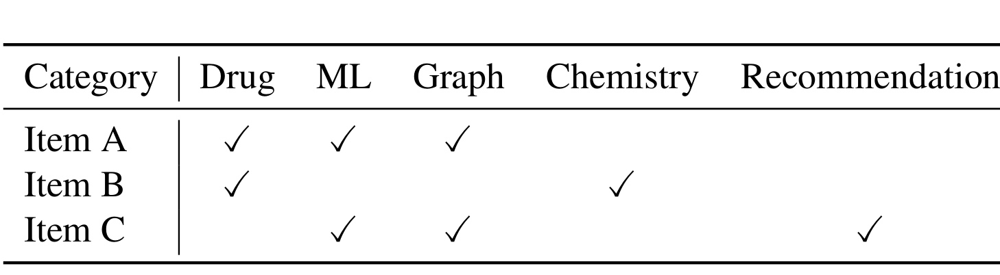
Table 1 把组合性问题压缩成三个论文物品。A 同时属于 Drug、ML、Graph，B 属于 Drug、Chemistry，C 属于 ML、Graph、Recommendation。对偏好药物研究的用户，A 应更靠近 B；对偏好机器学习和图研究的用户，A 应更靠近 C。表中没有用户列，恰恰强调属性事实本身不决定唯一邻域：相同的 A 需要在不同用户的评分空间里得到不同位置。单一全局映射只能给 A 一个固定向量，既无法同时满足两种相似度次序，也会把多个类别的贡献平均掉。多视图只能解决“从哪些语义看物品”，个性化生成器才解决“某个用户怎样看同一物品”，二者缺一不可。这里也说明为什么把多个编码器输出平均仍不够：平均权重对 B 与 C 相同，无法让 B 偏向 Drug/Chemistry 视图、让 C 偏向 ML/Graph/Recommendation 视图，必须进一步加入物品级门控。
1.2 PMFRec 对三个缺口的对应修复
PMFRec 的核心不是让客户端接触属性，而是让服务器用客户端上传的温物品嵌入反推出用户特定映射：$Q_u$ 已经经过用户本地交互优化，因此可被当成这个用户的协同偏好靶标；服务器再用 $X^W$ 拟合 $h_u$，将其迁移到从未出现过交互的 $X^C$。与此同时，服务器把所有参与客户端的 $Q_u$ 做平均，作为全局协同知识 $Q_g$，训练多个属性投影器和物品级门控，得到不依赖单个用户但能按物品组合语义的 $F_M$。最终传给客户端的是 $h_u(X)$ 与 $F_M(X)$ 的融合结果，而不是两套待对齐矩阵。
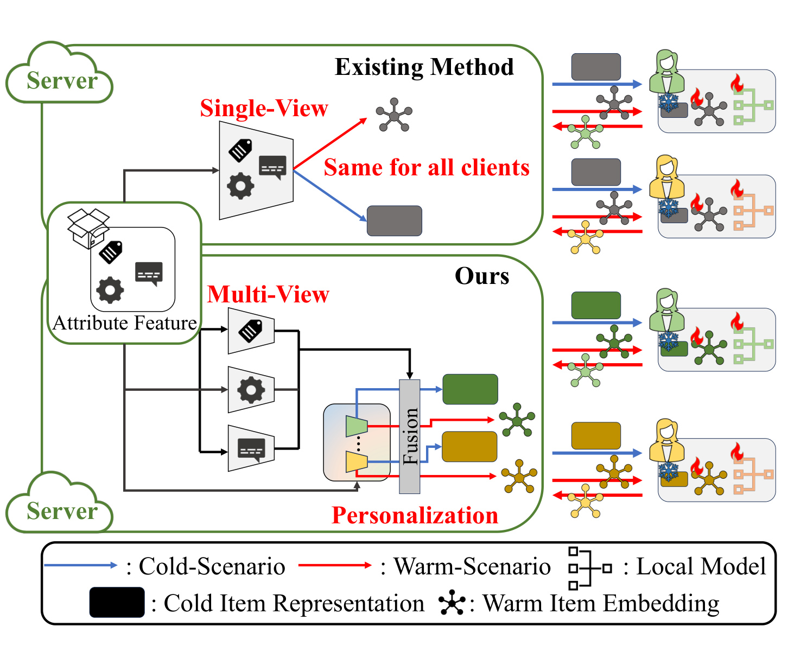
Figure 1 的上半部分把既有方案画成服务器的 single-view 编码：同一个冷物品表示沿蓝色冷场景路径发给所有客户端，暖场景的协同嵌入虽能通过红色路径参与训练，却没有改变冷物品对不同用户的表达。下半部分的 PMFRec 先用多个投影器形成多视图，再由门控组合，并注入由每个用户温交互诱导出的个性化分量，所以相同冷物品在绿色用户和黄色用户处可成为不同向量。图中“Fusion”也说明通信改造：客户端接收的是已融合的单一 $Z_u$，本地只优化推荐损失。需要注意，图示并不等于属性不可泄漏的证明；它只明确了原始属性不下发、私有用户模型不上行的协议边界。
这使论文的贡献可以准确拆成四项：个性化表示生成器处理用户差异；全局多视图编码和物品门控处理属性的多语义组合；正交与负载均衡分别抑制视图冗余和路由塌缩；单一融合表示与正则器无关的客户端目标减少双矩阵传输及梯度冲突。后文应始终区分这几层：双侧约束是任务设定，个性化生成器是用户侧迁移机制，多视图与门控是全局属性建模，正交/负载项是服务器训练约束，LDP 则是另加在客户端释放更新上的可选隐私机制。
2. 方法
2.1 双侧约束下的正则器无关客户端训练
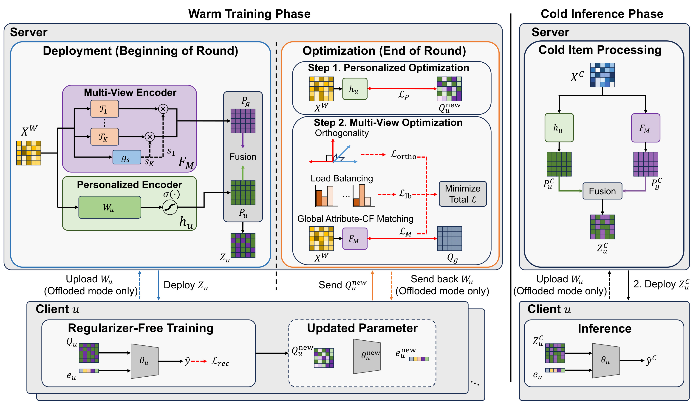
Figure 2 左侧是温训练，右侧是冷推理。每轮开始，服务器用温属性 $X^W$ 分别经过个性化编码器 $h_u$ 与多视图编码器 $F_M$，融合成 $Z_u$ 下发；客户端以它初始化 $Q_u$，只依赖本地交互更新 $Q_u$、$e_u$ 和 $\Theta_u$，轮末把更新后的物品矩阵送回服务器。服务器一边流式汇总 $Q_g$，一边拟合 $W_u$，再用 $Q_g$ 训练多视图、门控、正交和负载目标。右侧冷阶段把 $X^C$ 送入同样两条映射并融合成 $Z_u^C$，客户端用私有打分器推理。虚线还展示 offloaded 模式：$W_u$ 可由客户端保存，需要时上传；这降低服务器常驻存储，却增加一类参数往返，不能与“每轮只传一个物品表示矩阵”的通信收益混为一谈。
符号解释：$\mathcal D_u^{(W,+)}$ 是用户的温物品正反馈，$\mathcal D_u^{(W,-)}$ 是从未交互温物品中采出的负样本，$y_{ui}$ 与 $\hat y_{ui}$ 分别是真值和预测；$Q_{ui}$ 是用户本地的物品 $i$ 表示，$e_u$、$\Theta_u$ 以及二层 MLP 打分器 $\mathcal F_u$ 都留在客户端，$\mathcal W_u=\{e_u,\Theta_u\}$。式 (1) 只优化推荐，式 (2) 把用户和物品表示连到分数，式 (3) 同时更新本地物品矩阵与私有参数。关键在于 $Q_u$ 起点是服务器的属性融合表示，协同梯度会直接写入这个向量；因此属性—协同融合发生在优化轨迹里，不需要再加 $\|Q_u-Z_u\|$ 一类对齐正则。推理时不再做本地训练，而是复用学得的 $e_u,\Theta_u$ 给 $Z_u^C$ 打分。
2.2 增量聚合与个性化表示生成器
符号解释：$\mathcal U^t$ 是第 $t$ 轮参与用户集合，$Q_g$ 在轮初清零，收到一个 $Q_u$ 就累加其等权份额。第一式是到达时的流式实现，第二式是轮末等价结果；它避免服务器同时保存所有客户端矩阵，但并没有减少单个客户端上传 $Q_u$ 的大小，也没有处理非独立同分布或不同样本量下等权平均是否合适。$Q_g$ 只承载参与者共享的协同知识，随后作为多视图属性编码的回归靶标。对每个用户，服务器还从 $X^W$ 与上传的 $Q_u$ 构造个性化映射；下面的式 (6)–(9) 依次给出非线性生成器、直接拟合、逆激活岭回归和闭式解。
符号解释：$W_u\in\mathbb R^{d_f\times d}$ 把 $d_f$ 维属性映射到 $d$ 维推荐表示，$\sigma$ 是非线性激活，$\lambda$ 是岭正则，$I$ 为单位矩阵，$\|\cdot\|_F$ 为 Frobenius 范数。式 (6) 定义用户特定生成器；式 (7) 是直观但需要逐用户迭代求解的目标；式 (8) 对 $Q_u$ 应用逆激活，把问题改成线性岭回归；式 (9) 给出闭式解，其中只依赖 $X^W$ 的前置因子可预计算。这样 $Q_u$ 中的用户协同偏好成为属性映射的监督，$W_u$ 再用于 $X^C$。边界也很明确：逆激活必须在数值上可用，闭式解涉及大矩阵求逆或分解，且正则化只让简单精确线性反演变难，不能被表述为服务器属性不可被推断的形式化证明。
论文给出 server-retained 与 storage-efficient offloaded 两种模式。前者服务器永久保存每个 $W_u$，推理请求直接生成表示，代价是用户规模乘以 $d_f d$ 的存储；后者拟合后把 $W_u$ 发回客户端并丢弃，未来客户端再上传使用，以通信换常驻内存。两种模式都没有把 $X^W$ 或 $X^C$ 直接交给客户端，但 offloaded 的 $W_u$ 本身由专有属性参与计算，应被当作潜在泄漏面审计，而不是因岭正则存在就自动安全。
2.3 全局多视图编码、门控与正交目标
符号解释：全局分支用 $K$ 个一层 MLP 投影器，$\mathcal T_k:\mathbb R^{d_f}\to\mathbb R^d$ 是第 $k$ 个语义投影器；$s_{ik}$ 是物品 $i$ 对视图 $k$ 的 softmax 权重，所有视图权重和为 1；$W_s,b_s$ 是门控参数。式 (10) 不是固定平均，而是按物品组合视图；式 (11) 把 logits 归一化；式 (12) 说明路由依据仍是服务器属性。因而同一视图在所有用户间共享，但不同物品可选择不同语义比例；用户差异由另一条 $h_u$ 分支提供。个性化与多视图不是两个同义标签：前者改变“谁在解释”，后者改变“属性按哪些子空间解释”。 多视图首先通过后面的式 (14) 贴近聚合协同靶标。
符号解释：$F_M(X^W)$ 是所有温物品的全局属性表示，$Q_g$ 是本轮客户端平均后的协同表示。该式让属性侧能迁移协同结构，但只靠它会允许所有 $\mathcal T_k$ 学成相近函数。为此，式 (15)–(16) 先求每个视图在温物品上的平均知识向量，再惩罚归一化后 Gram 矩阵的非对角项：
符号解释：$J_k$ 是视图 $k$ 的平均方向，$A^\top A$ 的非对角元素是视图均值方向之间的余弦；最小化其平方鼓励不同视图平均正交。式 (15) 把物品级表示压成视图级统计，式 (16) 去除跨视图冗余。它约束的是均值方向，并不保证每个物品、每个维度或整个子空间都正交；当 $K$ 大于有效语义数时，强行正交还可能损失共享信息。
符号解释：只有正交仍可能让门控长期偏向少数视图，式 (17) 因而以平均路由质量的熵做负载均衡。$S_k$ 是所有温物品分给视图 $k$ 的平均质量，$\xi$ 防止 $\log 0$；$\lambda_{\mathrm{ortho}}$ 与 $\lambda_{\mathrm{lb}}$ 控制两种约束。式 (17) 本身越均匀越大；总目标式 (18) 前面带负号，所以最小化总损失等价于最大化这项熵。若误把 $\mathcal L_{\mathrm{lb}}$ 当作普通正项加入，就会反向鼓励塌缩。该目标只保证全局利用率较均衡，不要求每个物品平均用所有视图，仍允许物品级门控尖锐选择。
2.4 温阶段部署、冷推理与 LDP 扩展
符号解释：$Z_u$ 是训练轮下发的温物品单一表示，$Z_u^C$ 是冷推理表示，两个分支固定各占一半。式 (19) 让客户端从已融合的个性化/全局属性知识出发吸收协同梯度；式 (20) 把相同映射外推到零交互冷物品。客户端最终计算 $\hat y_{ui}^C=\mathcal F_u(Z_{ui}^C,e_u;\Theta_u)$。固定 $1/2$ 简洁但未按用户、物品或不确定性自适应；若个性化闭式解不稳定或全局视图欠拟合，另一分支不能自动降低其权重。
通信方面，论文的比较点是每轮只交换一个 $|\mathcal I^W|\times d$ 物品表示类型，而显式对齐方案需要协同与属性两套表示。服务器的流式聚合又把峰值内存从保存全部 $Q_u$ 降到累计一个 $Q_g$。但“类型减半”不等于给出真实网络字节、压缩编码、稀疏更新或异步超时成本；offloaded 模式还要额外传 $W_u$。因此本文支持的是协议层通信结构改进，不是生产通信量已被完整测量的结论。标准联邦训练也不自动消除表示泄漏，论文才额外在客户端释放的物品梯度矩阵上使用式 (21)–(22) 的裁剪与高斯噪声。
符号解释：$G=\nabla_{Q_u}\mathcal L_u$，$C$ 是矩阵级 Frobenius 裁剪阈值，$Z$ 是逐维高斯噪声，$\sigma$ 由给定 $(\varepsilon,\delta)$ 校准，$\eta$ 是学习率。式 (21) 先限制敏感度再加噪，式 (22) 使服务器只看到 $\Delta Q_u=-\eta\widetilde G$。保护对象是客户端本轮释放的更新，目标是降低正样本索引与跨轮更新模式泄漏；它不保护服务器对 $X$ 的内部访问，不替代对 $W_u$ 外发的属性反演审计，也不能忽略多轮组合后的总隐私预算。论文附录给出单次高斯机制的 LDP 推导，但生产部署仍需隐私会计、采样与多轮组合说明。
3. 实验结果
3.1 数据、基线与评测协议
论文使用 CiteULike 和 XING。CiteULike 将标题、摘要转成 8000 维 TF-IDF，再经 SVD 得到 300 维属性；物品按 80/20 分温/冷，冷物品再按 30/70 分验证/测试。XING 原始属性为 2738 维，抽取 5000、10000、20000 用户三个子集，温/验证/测试物品比为 6:1:3。训练中所有方法潜维 64、batch 256、每正样本配 5 个负样本、每轮用户采样率 1.0、本地 epoch 1、服务器 epoch 1。PMFRec 在 CiteULike 跑 300 轮、XING 跑 400 轮，其他 baseline 报告为 1000 轮；这会让收敛速度看起来有利，但论文没有给统一 wall-clock 对比。
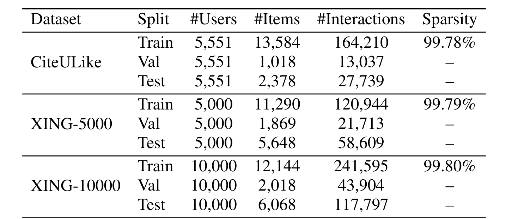
Table 2 显示训练交互极稀疏：CiteULike 5551 用户、13584 个训练温物品、164210 条训练交互，稀疏度 99.78%；三种 XING 子集随用户数从 5000 增至 20000，训练物品约 1.13–1.23 万，交互从 12.09 万增至 48.52 万，稀疏度仍约 99.79%–99.80%。验证和测试物品是冷集合，不与训练温物品重叠，因此测试确实检验零交互属性外推，而非稀少交互补全。另一方面，四个“数据集”实质来自两个来源，三个 XING 切片共享数据生成机制，不能等同于四种完全独立域。
baseline 包括可直接利用属性的 FedMVMF、FedWDR、FedNCF_CS、PFedRec_CS、FedVBPR、FedDCN，以及同样遵守双侧约束并显式对齐的 IFedNCF、IPFedRec。评测对每个用户在冷物品中排序，报告 Recall@K、Precision@K、NDCG@K：
符号解释：$GT(u)$ 是用户测试正样本，$\mathrm{TopK}(u)$ 是模型前 $K$ 个冷物品，$\mathrm{rel}_{u,j}$ 表示第 $j$ 位是否命中。Recall 强调覆盖正样本，Precision 固定分母为 $K$，NDCG 进一步奖励靠前命中。三者都是先按用户计算再平均，用户间不按交互量加权，这为后续 Z@K 和 Gini 的用户级分析保留了一致口径。
3.2 主结果：多数指标领先，但不是无例外
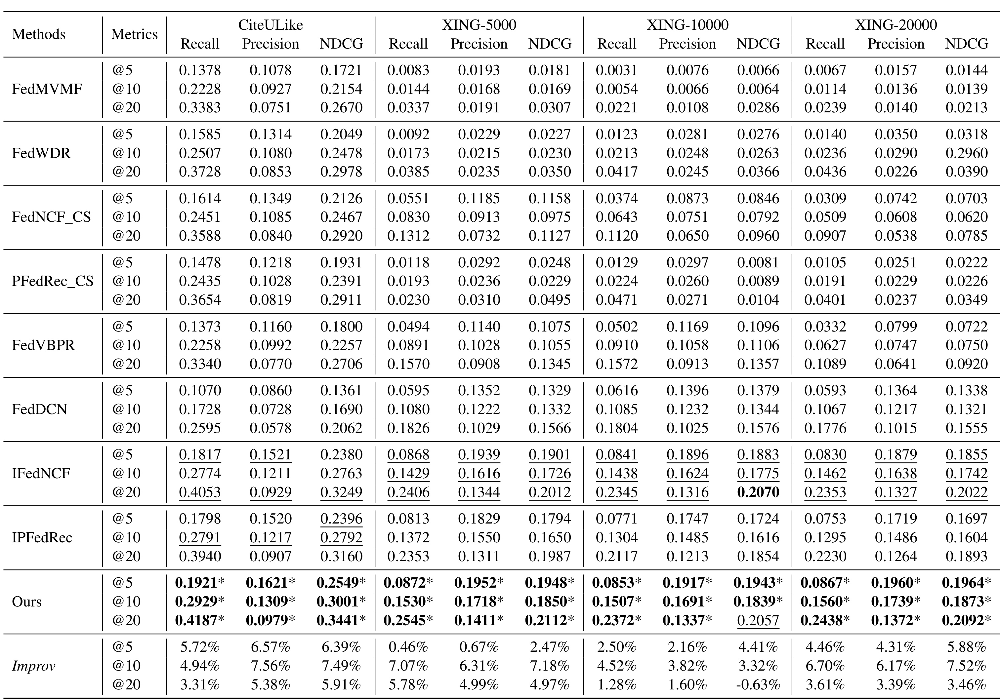
Table 3 是最重要的量化证据。PMFRec 在 CiteULike 的 @10 达到 Recall 0.2929、Precision 0.1309、NDCG 0.3001，相对最强 baseline 分别提升 4.94%、7.56%、7.49%；XING-5000 @10 的三项为 0.1530、0.1718、0.1850，对应 7.07%、6.31%、7.18%。随着 XING 用户规模扩大，@10 的相对提升仍约 3.32%–7.52%，说明收益没有随规模直接消失。星号表示与每项最强 baseline 的配对 t 检验达到 $p\le0.05$。不过表中有一个明确反例：XING-10000 的 NDCG@20 为 0.2057，低于 IFedNCF 的 0.2070，相对提升 -0.63%。因此准确表述应是“几乎所有单元领先且多数显著”，而不是“所有指标全面最佳”。
结果还显示遵守双侧约束并不必然弱于直接让客户端用属性的 baseline。PMFRec 相比 FedNCF_CS、FedVBPR 等多数情况下更好，支持论文的解释：仅能访问属性并不足以保留用户偏好，如何把温协同结构迁移到冷属性才关键。但此表不能单独证明提升来自哪一模块，也不能证明生产通信更省；统计显著性来自重复实验的配对检验，论文截图没有同时报告方差、置信区间或运行次数，读者无法从表中判断效应稳定性的绝对范围。
3.3 组件消融：个性化与全局多视图互补
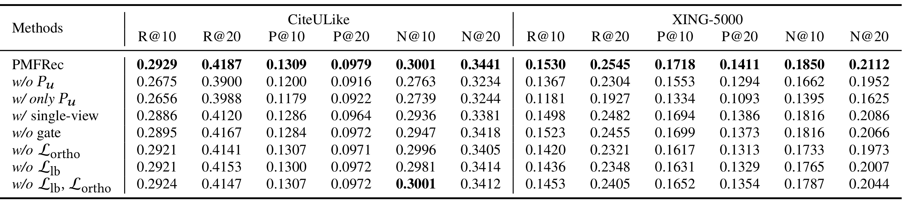
Table 4 在 CiteULike 与 XING-5000 上拆除组件。去掉个性化 $P_u$ 后，CiteULike R@10 从 0.2929 降至 0.2675，XING-5000 从 0.1530 降至 0.1367；只保留 $P_u$ 更差，XING-5000 R@10 仅 0.1181。这说明用户特定映射需要全局协同知识稳定，而全局映射也需要个性化避免平均化。改成 single-view 或去 gate 的降幅较小但普遍存在，支持“多视图+物品自适应组合”而非仅堆多个投影器。去掉 $\mathcal L_{\mathrm{ortho}}$、$\mathcal L_{\mathrm{lb}}$ 在 XING-5000 的损失更明显；但 CiteULike 上同时去掉两项的 N@10 仍等于完整模型 0.3001，表明两个约束存在数据依赖和相互作用，不能把任何单项写成在所有指标上必不可少。
消融的证据链较完整：$P_u$ 对应用户差异，single-view 对应组合性，w/o gate 对应固定平均，两个损失对应视图去冗余与利用率。然而论文没有报告固定参数量的多视图对照；$K>1$ 带来更多投影参数，部分收益可能来自容量。也没有把固定 1/2 融合与可学习融合比较，因而当前实验只证明所选实现有效，尚未证明其组合方式最优。
3.4 个性化覆盖、公平性与多视图行为
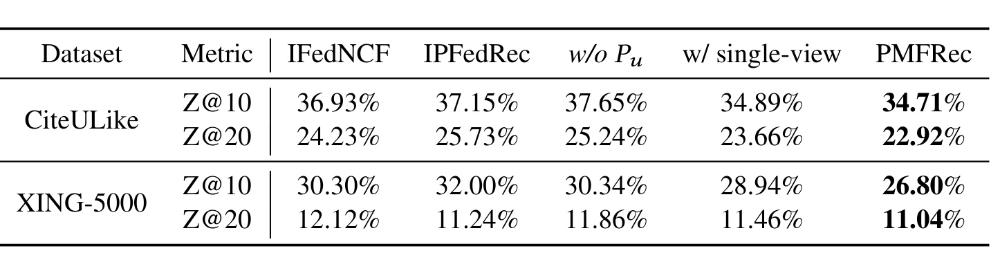
Table 5 定义 Z@K 为冷物品 Recall@K 等于零的用户比例，它直接回答“平均指标提高是否只惠及少数用户”。在 CiteULike，PMFRec 的 Z@10/Z@20 为 34.71%/22.92%，低于 IFedNCF 的 36.93%/24.23% 和去个性化的 37.65%/25.24%；XING-5000 则为 26.80%/11.04%，同样是表中最低。single-view personalized 已经大幅优于无个性化变体，说明减少完全零命中主要由用户特定映射驱动，多视图再提供补充。风险是绝对零命中比例仍不低，例如 CiteULike @10 仍有约三分之一用户完全未命中，方法并未消除长尾用户失败。表里还没有给 Z@5 或按用户活跃度切片，暂时无法判断改善主要来自轻度活跃用户还是最稀疏用户。
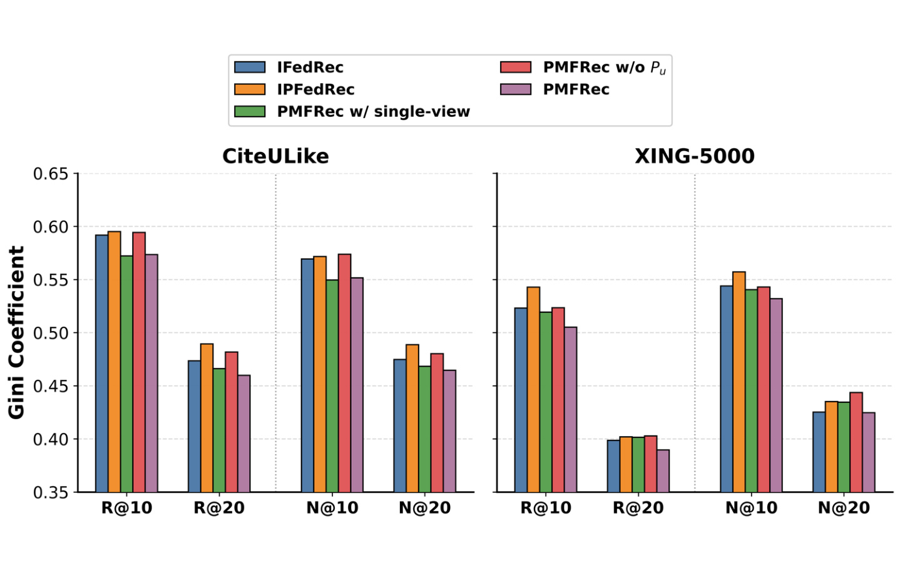
Figure 3 用每用户 Recall/NDCG 的 Gini 系数衡量分布不均，越低越均匀。公式为 $G=\sum_i(2i-n-1)x_{(i)}/(n\sum_i x_{(i)})$，其中 $x_{(i)}$ 是排序后的用户指标。两数据集上，PMFRec 红柱大多低于 IFedRec/IPFedRec 及无个性化版本，和 Z@K 结论一致；但 CiteULike 的 R@10、N@10 上，single-view personalized 的绿色柱略低于完整 PMFRec。也就是说，多视图提升总体准确率时，未保证每个公平性切面继续改善。Gini 还只度量结果分布，不使用人口属性，不能推出群体公平、机会均等或偏差消除；同时它对大量零值的分布很敏感，应与 Table 5 联合阅读而非独立贴“公平”标签。
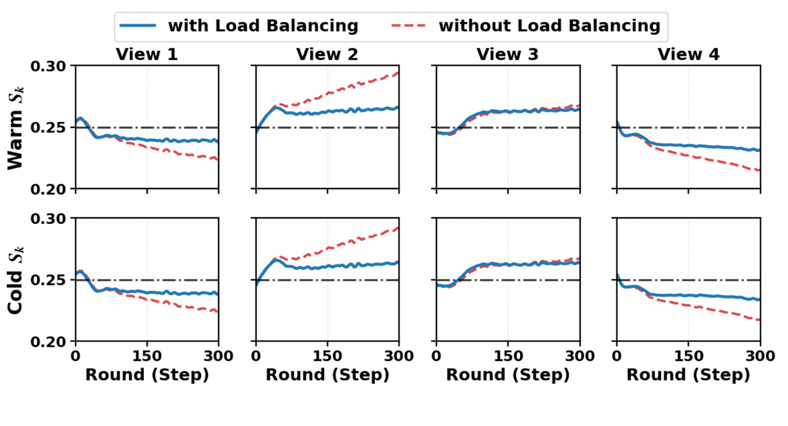
Figure 4 分别画出温物品和冷物品在四个视图上的平均路由质量 $S_k$。带负载均衡的蓝线整体更稳定，虚线对照在 View 1、4 逐步下滑，在 View 2 上升得更明显，说明没有熵项时门控会把更多质量推向少数视图。值得注意，蓝线也不是严格相等：PMFRec 允许不同视图承担不同语义负载，只抑制极端塌缩。冷物品曲线与温物品趋势接近，表明基于属性的门控能外推到未见冷集合；但这仍是两个数据集/所选 $K=4$ 下的均值轨迹，不能保证每个具体物品都得到合理路由。横向虚线约在 0.25，正对应四视图完全均匀分配；蓝线围绕它波动而非贴死，也验证总目标最大化的是总体熵，没有把每个物品的门控强制成均匀向量。若线上物品类别本来高度不均衡，过强均衡还可能牺牲真实先验。
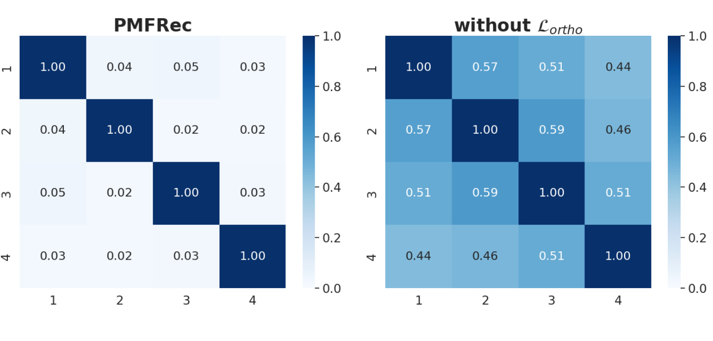
Figure 5 计算未见冷物品上视图投影的平均两两余弦相似度。完整 PMFRec 的非对角值约为 0.02–0.05，而去掉 $\mathcal L_{\mathrm{ortho}}$ 后约为 0.44–0.59；对角线均为 1。这个差异直接说明正交项确实把视图均值方向推开，而不是仅在训练温物品上制造表面差异。证据也要按公式边界读：热图反映平均余弦，不能证明整个表示子空间统计独立，更不能保证某两个视图在所有物品上语义互斥。低相似度若过度，也可能丢掉合理共享属性，需结合主指标而非单看“越低越好”。热图只展示 CiteULike 和四视图设置，尚缺 XING 及更大 $K$ 下的相同诊断，这与 Figure 9 中视图数增大反而退化的现象值得联动复核。
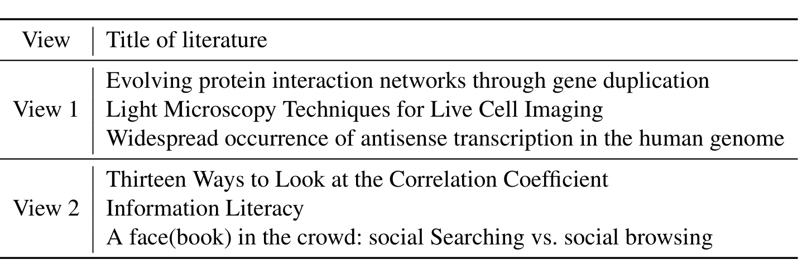
Table 6 将两个视图中门控权重最高的 CiteULike 论文列出。View 1 的三篇分别涉及蛋白质交互网络、活细胞显微成像、反义转录，形成明显生物学簇；View 2 包含相关系数、信息素养和社交搜索/浏览，更靠近统计与信息/社会科学。它把 Figure 5 的数值去相关补成可解释语义：不同投影不仅方向不同，还可能聚合不同研究主题。局限也很明显：这里只展示两个视图、每个三个顶部样本，属于挑选后的定性证据；没有主题纯度、人工标注一致率或所有视图的系统分析，不能据此断言每个视图都稳定对应唯一概念。还应检查同一论文在不同视图的排名、跨随机种子的簇稳定性，以及门控权重是否只是被高频 TF-IDF 词驱动。对 XING 的结构化属性也应做同类语义核验。
3.5 适配性、温场景与优化行为
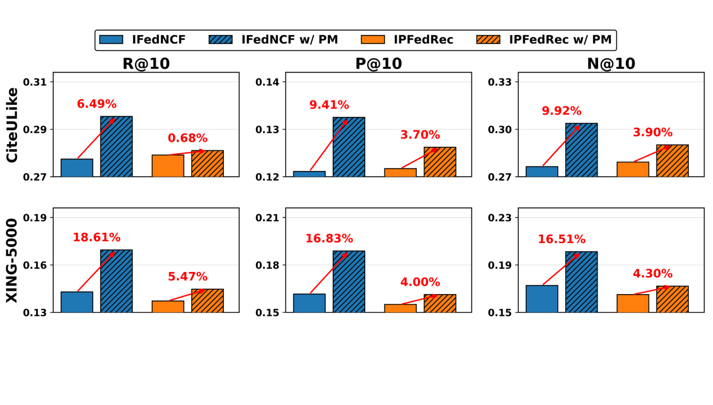
Figure 6 把 PM 表示替换进 IFedNCF 与 IPFedRec，其他结构保持不变。CiteULike 上三指标增益从 0.68% 到 9.41%，XING-5000 上从 4.00% 到 18.61%，说明表示模块不只在 PMFRec 自有训练协议里有效，尤其 IFedNCF 的增益较大。不过论文明确提醒，这些 w/ PM baseline 仍需把两类表示分别传给客户端，因此适配实验验证的是表示质量，不代表继承了 PMFRec 的单表示通信优势。柱图也未给运行时、参数量和通信字节，无法判断增益是否值得额外系统成本。两种 baseline 的提升幅度差异还提示 PM 表示与原有打分器/对齐项存在交互，不能把增益简单视为独立、可加的模块收益。
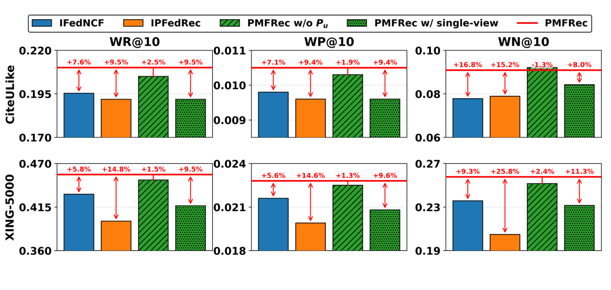
Figure 7 在 warm scenario 比较 IFedNCF、IPFedRec、去个性化、single-view 与完整 PMFRec。完整模型在 CiteULike 和 XING-5000 的 R@10、P@10、N@10 上保持领先，图中相对 baseline 的最高标注为 25.8%。与冷场景消融不同，warm 场景去多视图后的绿色柱下降更显著，作者据此认为交互充分时，多视图对解释温物品属性更关键；冷场景则个性化对外推用户偏好更关键。这一角色变化有启发性，但 warm 实验仍基于相同两类数据和离线切分，没有真实的新物品上线时序或分布漂移。图中百分比以各自 baseline 为分母，跨柱比较时还需同时看绝对柱高，避免把低基数上的相对涨幅当成更大业务收益。
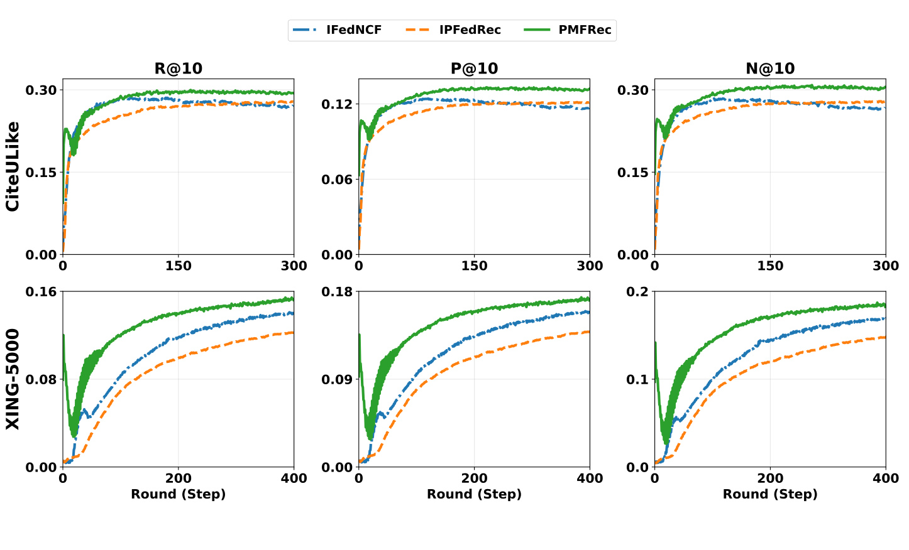
Figure 8 给出 CiteULike 300 轮和 XING-5000 400 轮的 R@10、P@10、N@10。PMFRec 绿色曲线最终高于两条 baseline，但早期先出现短暂下降再持续上升；作者把它归因于用户偏好尚未成形时过早使用个性化映射。IFedNCF/IPFedRec 更接近单调上升。这个轨迹提醒复现者考虑 warm-up：前若干轮弱化 $h_u$ 或延迟个性化更新，可能减少早期扰动。图中横轴是 round 而非时间，且 baseline 的最终训练预算另为 1000 轮，所以它证明的是轮次收敛形态，不是端到端时延优势。曲线也没有误差带，早期谷值与后期差距是否跨随机种子稳定仍待验证；同时缺少服务器闭式求解耗时的分解。
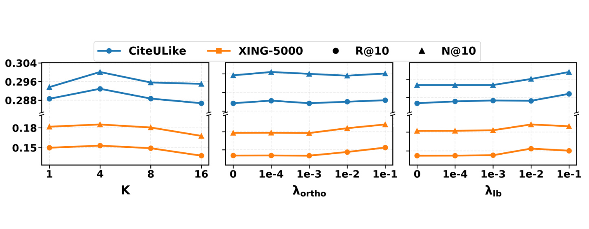
Figure 9 左图显示 $K=4$ 在两个数据集上最好，继续增到 8、16 反而下降，说明有效语义数有限，更多视图会加重冗余或优化难度。中图的最佳 $\lambda_{\mathrm{ortho}}$ 在 CiteULike 为 $10^{-4}$、XING-5000 为 $10^{-1}$，跨了三个数量级，虽然正值整体优于零，却不能直接复用同一超参。右图中较大的 $\lambda_{\mathrm{lb}}$ 通常更好，支持均衡路由，但曲线变化相对温和。参数分析只覆盖两个数据集与离散网格，没有联合扫描 $K$、两个损失权重，可能遗漏它们的交互最优区。还缺少等参数量的 single-view 宽模型，因而 $K$ 的曲线同时混合了语义分解、容量与优化效应。
3.6 LDP 鲁棒性与隐私边界
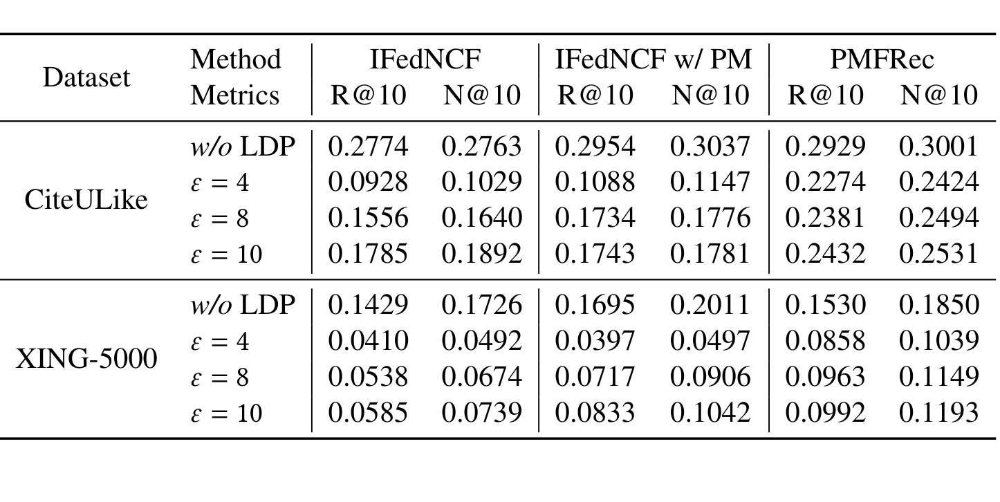
Table 7 固定 $\delta=1/|\mathcal U|^{1.1}$，比较无 LDP 与 $\varepsilon\in\{4,8,10\}$。更小 $\varepsilon$ 噪声更强，所有模型都明显退化：CiteULike 上 PMFRec R@10 从 0.2929 降至 $\varepsilon=4$ 的 0.2274，XING-5000 从 0.1530 降至 0.0858。尽管绝对效用受损，PMFRec 在每个有噪设置都高于 IFedNCF 和 IFedNCF w/ PM，例如 CiteULike $\varepsilon=10$ 的 R@10 为 0.2432，而两者为 0.1785、0.1743。结论应是“在论文选定裁剪和预算下相对更稳健”，不是“LDP 无损”或“已解决隐私”。
作者用目标方向 $\hat v$ 上的有效投影信噪比解释差异：
符号解释：$\phi_v$ 是梯度 $G$ 与目标方向的夹角，分子是裁剪后沿正目标方向保留的信号，分母 $\sigma C$ 是投影噪声标准差。若推荐梯度与显式对齐梯度相反，合成后的 $\cos\phi_v$ 或有效幅度会变差；裁剪再把总幅度压到 $C$，噪声更容易盖过真正推荐信号。PMFRec 客户端只优化推荐损失，因而避免一类复合梯度冲突。
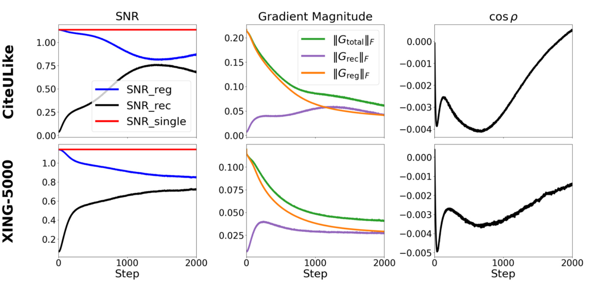
Figure 10 针对 IFedNCF w/ PM 展示 $\varepsilon=10$ 时的诊断。左列中推荐与正则信号的 SNR 都低于单目标上界；中列显示总梯度、推荐梯度和正则梯度的幅度随训练变化；右列 $\cos\rho$ 在相当长阶段为负，意味着 $G_{\mathrm{rec}}$ 与 $G_{\mathrm{reg}}$ 指向相反。加噪和裁剪会放大这种方向干扰，解释显式对齐 baseline 的脆弱性。该图是机制一致的经验诊断，却只分析最佳有噪 baseline、两个数据集和一个 $\varepsilon$，没有随机化干预来证明梯度冲突是全部性能差异的唯一因果来源。若要加强论证，应加入去正则、梯度投影或等噪声能量对照，并报告不同 $C$ 下的方向统计。
4. 总结
4.1 我的判断
PMFRec 的价值在于把四个容易混写的层次接成一条闭环：双侧信息约束决定原始数据不能相遇；$h_u$ 从客户端温物品嵌入拟合用户特定属性映射；$F_M$ 用门控组合全局语义视图；正交与负载目标分别约束“视图是否不同”和“视图是否被使用”；融合后的 $Z_u$ 让客户端只接收一种物品表示并只优化推荐损失。实验从主结果、消融、零命中用户、Gini、路由质量、跨视图相似度、语义案例、温场景和 LDP 多侧面支撑设计，证据链比只给一个平均 Recall 更扎实。
工程上最值得复用的是“服务器属性映射以客户端更新后的表示为监督、客户端本地只保留主任务”这一分工。它把复杂约束移到拥有属性的一侧，也减少 LDP 下多目标梯度互相抵消。复现时应优先核对：逆激活和岭求解的数值稳定性；$W_u$ 两种部署模式的真实内存/字节；早期个性化 warm-up；$K$ 与两个约束系数的联合搜索；多轮 LDP 隐私会计，而不是只复刻最终准确率。
4.2 局限与风险
- 数据与外推有限。 四个评测表项只来自 CiteULike 和 XING 两个源，三个 XING 切片不是独立域；没有电商、短视频或广告的动态新物品实验。
- 通信结论缺少系统测量。 论文从“两套表示变一套”论证通信更省，但未报告每轮字节、压缩、异步等待、端侧峰值内存与 wall-clock；offloaded $W_u$ 还会增加参数往返。
- 隐私边界不能扩大解释。 联邦协议本身不免疫更新泄漏；LDP 只覆盖客户端释放的梯度更新，$W_u$ 的属性反演风险和服务器侧属性机密没有形式化保证，多轮预算组合也未在主实验展开。
- 个性化映射有可扩展性与数值假设。 每用户 $W_u$ 的存储为 $O(|\mathcal U|d_fd)$；逆激活可能放大饱和区域误差，岭闭式解虽可预计算公共因子，仍需处理高维属性矩阵的分解稳定性。
- 多视图约束较粗。 正交只作用于视图平均向量，负载均衡只作用于全局平均路由，二者都不保证单物品语义解耦；$K=4$ 最优也显示继续加视图会伤害性能。
- 可复现性暂弱。 本轮未核验到官方代码，论文 PDF 还保留未完成的 ACM 模板元数据；部分表格存在值得复核的异常数值，例如 FedWDR 在 XING-20000 @10 的 NDCG 0.2960 与相邻趋势不一致。
4.3 后续方向
- 做通信—存储 Pareto 实验。 对 server-retained/offloaded 两种模式记录总字节、峰值内存、延迟和断连恢复，确认“单表示”在真实协议里节省多少，并定位 $W_u$ 上下行何时抵消收益。
- 引入自适应融合与个性化 warm-up。 用用户/物品不确定性替代固定 $1/2$，并在早期逐步增加 $h_u$ 权重；Figure 8 的先降后升给出了直接动机。
- 扩展隐私审计。 对 $Q_u$ 的成员/正样本推断和对 offloaded $W_u$ 的属性反演分别做攻击实验，配合多轮 RDP/隐私会计报告累计预算，而不只比较单个 $\varepsilon$ 下的准确率。
- 验证动态目录与跨域鲁棒性。 在真实按时间到达的新物品、属性缺失/噪声、用户漂移和部分参与条件下测试，并把视图语义稳定性、最差用户性能和冷物品覆盖纳入指标。
总体上，PMFRec 给出了一套结构清楚、离线证据较完整的联邦零交互冷物品方案；它最可信的结论是个性化与多视图全局知识具有互补性，且去掉客户端显式对齐正则可改善带噪优化。通信和隐私的生产级结论仍需要真实系统测量、攻击验证与多轮会计来补齐。